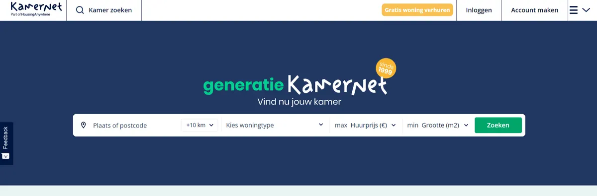
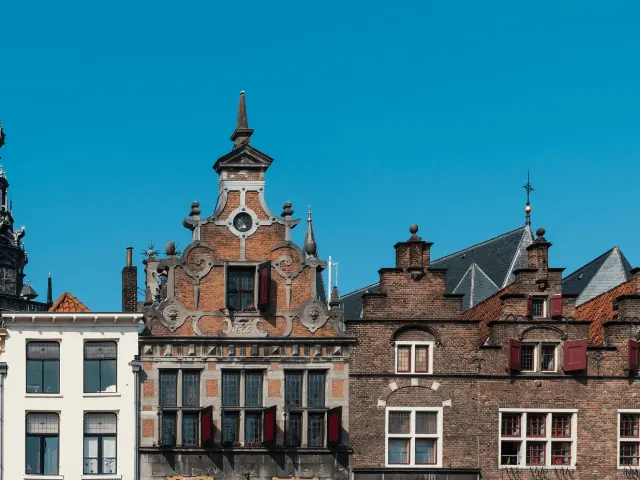

Kamernet’s Gids voor het Vinden van Huurwoningen in Nijmegen
Gepubliceerd op 11 juni 2024
Onderdeel van de gids Studeren in Nijmegen

Het vinden van huurwoningen in Nijmegen kan een behoorlijke uitdaging zijn, vooral als je vanuit het buitenland zoekt. Kamernet begrijpt het belang van het vinden van de perfecte huurwoning in deze bruisende stad en biedt een uitgebreide gids om huurders te helpen bij hun zoektocht. Van het gezellige stadscentrum tot de rustige buitenwijken, deze gids biedt essentiële inzichten en strategieën om je ideale thuis in Nijmegen te vinden.

1 – Begrijp het Huurlandschap van Nijmegen
Het huurlandschap van Nijmegen biedt een divers aanbod. Charmante appartementen langs de Waal en gezellige huizen verscholen in het groen zijn slechts enkele van de beschikbare keuzes. Elke buurt in Nijmegen heeft zijn eigen unieke charme en sfeer, die verschillende voorkeuren en levensstijlen bedienen. Het stadscentrum bruist van activiteit, met historische architectuur, levendige markten en een overvloed aan culturele attracties. Ondertussen bieden de omringende gebieden rust en mooie landschappen, perfect voor wie op zoek is naar een plek om af en toe de stad te ontvluchten. Het begrijpen van de unieke kenmerken van elke buurt is cruciaal bij het vinden van een huurwoning die aansluit bij je levensstijl en voorkeuren.

2 – Het gebruiken van Kamernet’s Zoekfuncties
Het gebruiksvriendelijke platform van Kamernet biedt een betrouwbare oplossing voor het vinden van huurwoningen die specifiek in Nijmegen zijn gelegen. Door een account aan te maken op Kamernet, krijg je toegang tot een uitgebreide database van huuradvertenties die zijn afgestemd op jouw criteria. Gebruik geavanceerde zoekfilters om je opties te verfijnen op basis van locatie, huurprijs en gewenste voorzieningen. Voor extra gemak en efficiëntie kan je upgraden naar een Premium Account om exclusieve functies te ontgrendelen, zoals reageren op onbeperkte advertenties, direct contact met verhuurders en directe zoekmeldingen.
3 – Tips voor het Contact opnemen met Verhuurders
Effectieve communicatie met verhuurders is belangrijk om je gewenste huurwoning in Nijmegen veilig te stellen. Stel een persoonlijk bericht op waarin je jezelf introduceert en je interesse in de woning uitdrukt. Vraag naar de beschikbaarheid van bezichtigingen en bereid je voor om relevante vragen te stellen over de huurvoorwaarden en eventuele specifieke eisen. Het opbouwen van een positieve relatie met verhuurders kan je kansen aanzienlijk vergroten om de huur te krijgen.
4 – Bezichtigen van Woningen
Plan afspraken in om huurwoningen persoonlijk te bezichtigen en voer grondige inspecties uit van elke ruimte. Let goed op de staat van de woning, inclusief eventuele onderhoudsproblemen of noodzakelijke reparaties. Evalueer de omgeving en voorzieningen om ervoor te zorgen dat ze voldoen aan je behoeften en voorkeuren. Maak aantekeningen tijdens het bezichtigingsproces om je te helpen vergelijken en goede beslissingen te nemen.
5 – Het Veiligstellen van je Huurwoning
Zodra je de perfecte huurwoning hebt gevonden, is het tijd om de overeenkomst af te ronden. Kamernet biedt veilige betalingsopties voor het overmaken van de eerste maand huur en borg naar de verhuurder. Zorg ervoor dat alle huurovereenkomsten uitgebreid zijn gedocumenteerd en de belangrijke voorwaarden bevatten, zoals de duur van de huurovereenkomst, huurbedrag en eventuele extra kosten. Kamernet moedigt verhuurders aan om zichzelf te verifiëren om transparantie en vertrouwen binnen de huurgemeenschap te bevorderen.
Conclusie
Het vinden van een huurwoning in Nijmegen kan een spannende reis zijn maar met de ondersteuning en begeleiding van Kamernet ben je goed voorbereid. Ons platform biedt de noodzakelijke tools en middelen om je zoektocht efficiënt te laten verlopen en je ideale thuis veilig te stellen in deze bruisende stad. Of je nu een huurder bent die op zoek is naar je volgende woning of een verhuurder die zijn woning wil adverteren, Kamernet is toegewijd aan het faciliteren van succesvolle huurervaringen voor alle betrokken partijen.
Makelaars in Nijmegen
Zin om te beginnen? In onze bedrijvengids vind je alle 48 makelaars in Nijmegen, met openingstijden, kenmerken en een kaart.
Bekijk alle 48 makelaars in Nijmegen
Heb je zelf een makelaar? Laat je hier uitlichten.